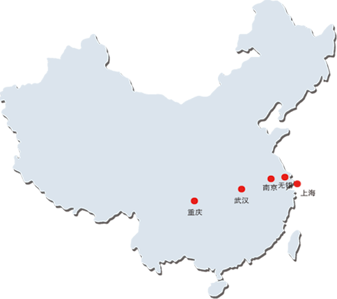

天气在线是德国“天气在线”网站（http://www.t7online.com）联合创始人，南京信息工程大学智协飞教授主导创办的产、学、研、用合作制学科型科技企业，是目前国内气象文化底蕴和技术实力雄厚、气象数据齐全的著名专业气象服务公司。
依托德国天气在线在全球气象服务领域强大的气象应用研发实力、海量的气象数据以及多年的服务经验，结合南京信息工程大学、德国波恩大学等国内外气象院校的最新研究成果，天气在线向电力、航空、水利、农林、环境、建筑、服装等行业用户提供全球各地的气象观测和天气预报数据服务。
-
南京Najing team
南京团队是智协飞教授领导的气象科技研发团队，聚焦数值天气预报、气象大数据、人工智能在气象服务上的应用、短期气候预测等研究，已取得了多项国际先进水平的科研成果，并成功实现了业务转化。团队研发的集合预报新技术、滑动训练期超级集合预报技术、基于雨量分级的BMA降水概率预报技术、基于MODE评估的多模式超级集合预报技术，以及基于多模式集成和统计降尺度技术的智能网格精细化预报技术处于国际先进水平，在国家气象中心及各省市气象部门得到广泛应用。
-
重庆Chongqing team
重庆团队在总经理杨杰的带领下，其核心研发人员从2008年起就专注于气象服务核心业务、行业应用软件的研发和气象物联网设备的集成运营。凭借其多年在系统开发、可视化呈现以及气象专业服务中积累的经验，重庆团队赢得了一大批气象行业客户的信任和支持。团队不仅在系统开发技术上处于行业前端，而且更加注重客户的体验和产品表达的清晰准确。在气象业务系统集成上，团队致力于为客户提供一揽子解决方案，在产品运营上也卓有成效。
-
上海Shanghai team
上海团队和新三板上市公司绮耘科技(浙江)股份有限公司合作致力于环境监测仪器和物联网硬件及气象、海洋设备传感器的研发和销售。同时，为培养中小学生从小爱科学的兴趣，团队和中小学合作建设校园气象站，开展气象科普教育和培训，并为学校师生提供校园气象观测数据和气象科技服务。
-
无锡Wuxi team
无锡团队是由多名气象博士组成的数值预报研究团队，在多模式集成，集合预报、人工智能在气象预报中的应用等方面做出国内开创性研究成果，创新性提出了滑动训练多模式集成预报技术，研发的集合预报新技术、基于雨量分级的BMA降水概率预报技术、基于MODE评估的多模式超级集合预报技术，以及基于多模式集成和统计降尺度技术的智能网格精细化预报技术处于国际先进水平。
-
武汉Wuhan team
武汉团队致力于气象新媒体产品的开发与运营。团队在互联网、移动应用、大数据应用和软件开发方面具有多年的开发经验。团队开拓进取、不断创新，努力提高气象应用在新媒体（微信端、APP端）虚拟现实的制作水平，运用尖端的软件开发技术，不断满足客户对气象应用的数字体验的需求。
-
南京
CHOGNQING
地址：重庆渝中区大坪英利国际广场2U22F
邮件：1007153574@qq.com
电话：023-68071290
传真：023-68071290
邮编：400010
-
南京
CHOGNQING
地址：重庆渝中区大坪英利国际广场2U22F
邮件：1007153574@qq.com
电话：023-68071290
传真：023-68071290
邮编：400010